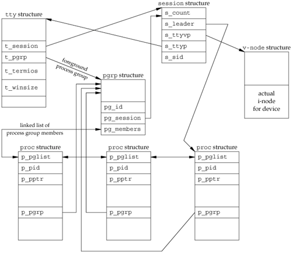

9.11. FreeBSD Implementation
Having talked about the various attributes of a process, process group, session, and controlling terminal, it's worth looking at how all this can be implemented. We'll look briefly at the implementation used by FreeBSD. Some details of the SVR4 implementation of these features can be found in Williams [1989]. Figure 9.12 shows the various data structures used by FreeBSD.

Let's look at all the fields that we've labeled, starting with the session structure. One of these structures is allocated for each session (e.g., each time setsid is called).
s_count is the number of process groups in the session. When this counter is decremented to 0, the structure can be freed. s_leader is a pointer to the proc structure of the session leader. s_ttyvp is a pointer to the vnode structure of the controlling terminal. s_ttyp is a pointer to the tty structure of the controlling terminal. s_sid is the session ID. Recall that the concept of a session ID is not part of the Single UNIX Specification.
When setsid is called, a new session structure is allocated within the kernel. Now s_count is set to 1, s_leader is set to point to the proc structure of the calling process, s_sid is set to the process ID, and s_ttyvp and s_ttyp are set to null pointers, since the new session doesn't have a controlling terminal.
Let's move to the tty structure. The kernel contains one of these structures for each terminal device and each pseudo-terminal device. (We talk more about pseudo terminals in Chapter 19.)
t_session points to the session structure that has this terminal as its controlling terminal. (Note that the tty structure points to the session structure and vice versa.) This pointer is used by the terminal to send a hang-up signal to the session leader if the terminal loses carrier (Figure 9.7). t_pgrp points to the pgrp structure of the foreground process group. This field is used by the terminal driver to send signals to the foreground process group. The three signals generated by entering special characters (interrupt, quit, and suspend) are sent to the foreground process group. t_termios is a structure containing all the special characters and related information for this terminal, such as baud rate, is echo on or off, and so on. We'll return to this structure in Chapter 18. t_winsize is a winsize structure that contains the current size of the terminal window. When the size of the terminal window changes, the SIGWINCH signal is sent to the foreground process group. We show how to set and fetch the terminal's current window size in Section 18.12.
Note that to find the foreground process group of a particular session, the kernel has to start with the session structure, follow s_ttyp to get to the controlling terminal's tty structure, and then follow t_pgrp to get to the foreground process group's pgrp structure. The pgrp structure contains the information for a particular process group.
pg_id is the process group ID. pg_session points to the session structure for the session to which this process group belongs. pg_members is a pointer to the list of proc structures that are members of this process group. The p_pglist structure in that proc structure is a doubly-linked list entry that points to both the next process and the previous process in the group, and so on, until a null pointer is encountered in the proc structure of the last process in the group.
The proc structure contains all the information for a single process.
p_pid contains the process ID. p_pptr is a pointer to the proc structure of the parent process. p_pgrp points to the pgrp structure of the process group to which this process belongs. p_pglist is a structure containing pointers to the next and previous processes in the process group, as we mentioned earlier.
Finally, we have the vnode structure. This structure is allocated when the controlling terminal device is opened. All references to /dev/tty in a process go through this vnode structure. We show the actual i-node as being part of the v-node.
|